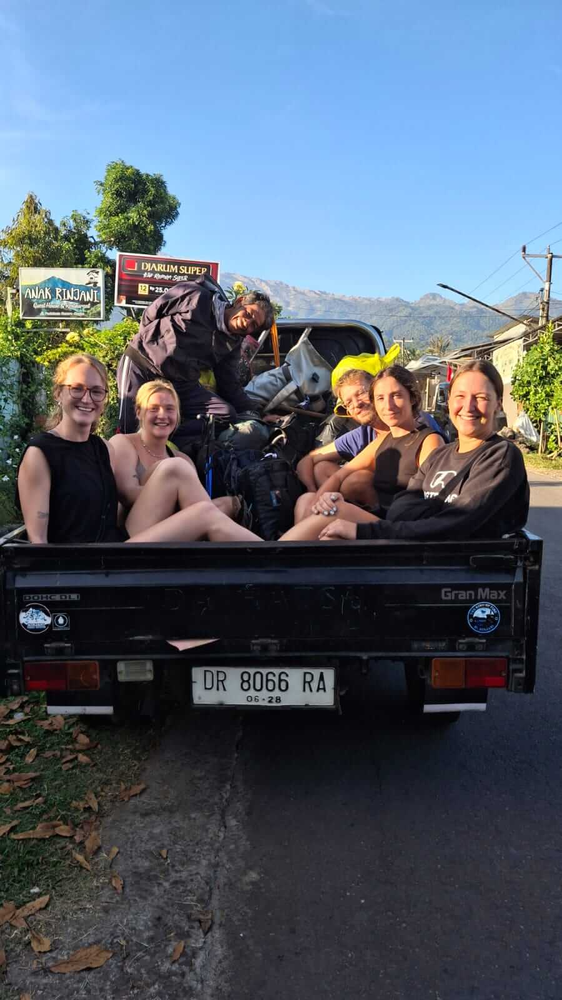

Discover the essential facts, rules, and general information you need before conquering Indonesia's second-highest volcano. Mount Rinjani is more than just a mountain; it is a sacred site and an unforgettable adventure.
Whether you are a seasoned mountaineer or a fit beginner, proper preparation is the key to a successful and safe trek. This general guide covers the absolute essentials you need to know before stepping foot on the trail.
1. The Geography and Significance
Standing majestically at 3,726 meters above sea level on the island of Lombok, Rinjani features a massive caldera filled by the stunning crater lake, Segara Anak. For the local Sasak people and Balinese Hindus, the mountain and lake are sacred places for pilgrimage and offerings. Respecting the local culture is paramount during your visit.
2. National Park Rules and Ethics
The Mount Rinjani National Park strictly enforces a "pack it in, pack it out" policy to preserve the pristine environment. When you trek with our team, we ensure zero waste is left behind. Trekkers are also required to stay on designated paths to protect the unique flora and fauna of the region.

Follow the designated trails to help preserve the national park's ecosystem.
3. Physical Preparation
Trekking Rinjani is demanding. The terrain varies from dusty savannahs to steep, rocky volcanic scree. We highly recommend starting cardiovascular training, such as running or stair-climbing, at least one month before your arrival. Mental stamina is just as important, especially for the challenging midnight summit attack.
4. Why Go with a Pro?
Navigating Rinjani requires specific permits, precise logistical planning, and strong physical support. By choosing a professional service, all your needs—from entrance tickets and expert English-speaking guides to high-quality camping equipment and freshly cooked meals—are fully covered, allowing you to focus purely on enjoying the journey.
Ready for the Adventure of a Lifetime?
Let Rinjani Trekking Pro handle the logistics. We provide premium camping gear, delicious meals, and an exclusive post-trek laundry service so you can relax after the climb.
Book via WhatsApp / Contact Us